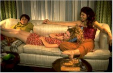
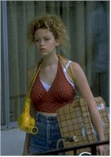
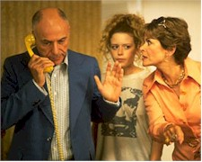

Contents | Features | Reviews | Books | Archives | Store |
 |
|
| Movie Credits | Buy It! |
Slums of Beverly Hills
Review by Carrie Gorringe
Posted 28 August 1998
| Written and Directed by Tamara Jenkins Starring
Alan Arkin, Marisa Tomei, |
The defining moment in Slums of Beverly Hills occurs at about the time the Abramowitz family moves into the aptly-named "Camelot" Apartments, and, while standing in the living room of their plush (by 1976 standards) digs, look around in wonderment. "Are we middle-class, are we middle-class?" Vivian (Lyonne), Ben (Krumholtz) and Rickey (Marienthal) ask each other and then, for affirmation, turn to the family patriarch, Murray (Arkin). He assures his children that, yes, indeed, the Abramowitzes have hit the big time at last. But this is not the first time he has promised them that this is the last time they will be moving. Murray is the archetypal schlemiel, whose feigned sang froid masks a lifetime of scrounging at the fringes of economic viability and the fear of falling from its grasp. At sixty-five, with three children under eighteen to support and a failed career and marriage behind him, Murray can offer his children precious little. Steak dinners are eaten at the Sizzler, and the family domicile has been a series of dingy apartments in equally dingy "dingbat" apartments, with Murray evacuating his family from each just one step ahead of an irate landlord. However, each of these apartments has been located in Beverly Hills, so that the children can get a good public-school education . In Papa Murray’s inimitable phrasing, "Furniture is temporary. Education is forever." Nevertheless, one gets the impression that the children have grown tired of the contemporaneous on all levels of life, including furniture.
Now, Murray and the children are on the verge of domestic security, courtesy of Murray’s tightwad brother, Mickey (Reiner). Mickey’s daughter, Rita (Tomei), is in need of a place to live and Murray offers to help her out -- for a generous rent subsidy, naturally. The promise of security for Murray’s family, however, is as potentially elusive as ever. Rita is, like good pie crust, very flaky, to say the least. A pill-popper who has just failed rehab for the umpteenth time, she is about to start nursing school and, as long as she stays straight, everything will be fine. She acts as a big sister to the neglected Abramowitz daughter, Vivian, who needs whatever guidance she can provide to a troubled girl struggling with both a burgeoning sexuality and the weekly laundry. Unfortunately, Rita harbors a secret that threatens to blow Murray’s carefully-constructed scheme straight back to lower-middle-class hell. Then there’s Eliot (Corrigan), a dropout from the illustrious Beverly Hills educational system who deals in pot, has an obsession with Charles Manson and philosophy and develops one over Vivian. It’s all like social climbing up the face of an about-to-erupt avalanche; the only thing missing is the loud retort to set the whole grisly affair in motion.
Slums is a marvelously-written and acted comedy. The script is low-key in its demeanor, but filled with thoughtful, quietly witty dialogue (this is the first film I’ve attended in years -- no temporal exaggeration here -- at which there was uproarious and spontaneous laughter at very frequent intervals) and a deft employment of ‘70s motifs, such as Vivian’s reference to Carole King’s Tapestry album (Jenkins doesn’t hit the audience over the head with the metaphor, but anyone familiar with the album and its lament for people who don’t "stay in one place anymore" and who go "so far away" feels its effects all the same). The film works so well because the essential humanity of the characters is interwoven with their humor; they’re not just cardboard characters spouting one-liners. Vivian’s voice-over commentary, for example, on the nature of "dingbat" apartments (those horrid, boxy, stucco-covered apartment buildings from the 1950s with excessively-fancy names like "Debonair" or "Villa Capri") encapsulates and reveals volumes about the anxieties and cruelties of middle-class poverty in one sentence. You wouldn’t want to be in these characters’ shoes, but you are fascinated by their struggles, and this is not a horrified fascination, like the paralysis that results from witnessing an impending train wreck. No, you watch them because Jenkins gives you the impression that there’s something legitimate at stake going on in front of you.
That same sense of legitimacy, not surprisingly, extends to the performances; the work is simply immaculate, particularly from Arkin, Lyonne, Tomei and Corrigan. You wouldn’t expect any less from a talent like Arkin, but Murray, through and through, is a textbook example of the dictum that comedy has within it the seeds of human suffering and rage. Best known for his comedic performances in Catch-22 and The Russians Are Coming! The Russians Are Coming!, Arkin reaffirms here his ability to play characters who balance precariously on the emotional edge; Murray is a defiant sad-sack who can’t quite believe the bad luck that keeps hunting him down and finding him. With a perpetual hang-dog look on his face and a weary glint of resolve in his eyes, Arkin makes Murray credible in all of his contrariness. Previously seen in Everyone Knows I Love You as Woody Allen’s daughter, Lyonne is an absolute standout as the daughter. Refusing to give in to the temptation to play Vivian as a whiny teenager (and an easy temptation it would be), Lyonne makes this Abramowitz into the backbone of her family while allowing her to display a fair amount of vulnerability, sensuality and playfulness (she does these omniscient-narrator roles so well, however, that she should take some care in choosing her next part, or she may end up being typecast). For those who have been nastily carping of late about the "mystery" of how Marisa Tomei managed to acquire an Oscar, they should look to her portrayal of Rita as a bona fide explanation. Simply put, Tomei has great timing and comedic sensibilities and displays them to excellent advantage herein. Rita is not simply a drugged-out rich kid; thanks to Tomei, the audience understands how much of a necessary anesthetic drugs have become for Rita as she desperately tries to be normal while always taking the wrong routes to happiness. One glimpse at the self-absorbed cranks known as Rita’s parents (two smart cameos by Reiner – by happy coincidence, he was one of Arkin’s co-stars in Russians -- and Moreno) is enough to irrefutably clarify her situation. Money may not be able to buy you happiness, but it at least gives you greater opportunities to extricate yourself from various screw-ups. Vivian and her family don’t have that luxury, but, at least, Vivian has, unlike the rest of her family, been given some glimpses into other windows of opportunity, via Rita and Eliot (Corrigan, who gives exceptional presence here), the philosophical, drug-dealing dropout who acts as an island of stability (compared to everyone else in this film, he’s stable) for the cocky-yet-frightened girl. Now, if Vivian can only incorporate all of the positive lessons these intentional and unintentional mentors have provided to her, while omitting all of their self-destructive tendencies, she will really make something of herself.
Jenkins’ directorial debut has the self-assurance and intelligence of a veteran director; indeed, she’s head-and-shoulders above many of her contemporaries. There will be those who, upon seeing the imprimatur of Robert Redford in the opening titles (he’s the executive producer, and yes, she did develop Slums at the Sundance Institute), will be tempted to dismiss Jenkins as yet another protegee with one good film in her, especially since much of the material within Slums is autobiographical; it’s an emotionally-soothing ploy for the inept, but probably one that is woefully inaccurate, judging from what she has presented here. There’s enough depth contained in Slums of Beverly Hills to fuel a slew of good films, and, given this subtly flagrant display of talent (forgive the oxymoron), I eagerly await Tamara Jenkins’ next project.
Contents | Features | Reviews | Books | Archives | Store
Copyright © 1999 by Nitrate Productions, Inc. All Rights Reserved.